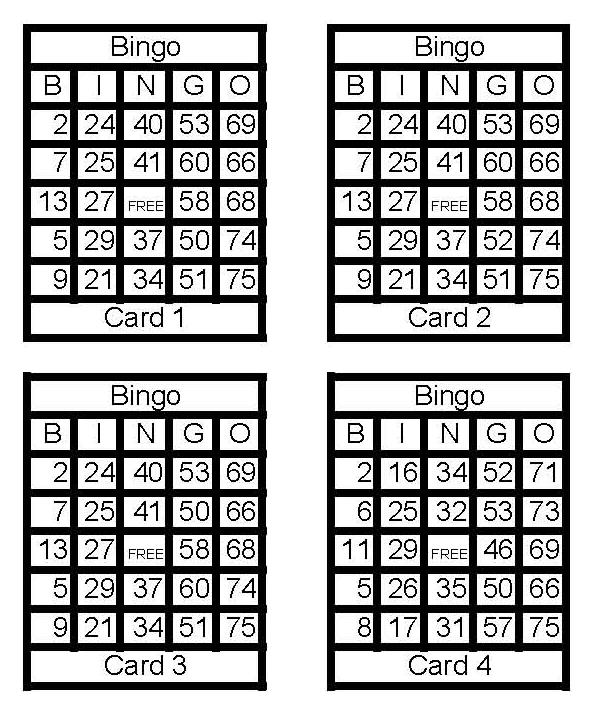

) But which card is most like card 1? Card 2 differs by only one number. Card 3 doesn't differ by any numbers at all, but two of the numbers are in different locations.
) But which card is most like card 1? Card 2 differs by only one number. Card 3 doesn't differ by any numbers at all, but two of the numbers are in different locations.| Evolution in the News - July 2007 |
| by Do-While Jones |
Related mites might not be related.
We just love DNA analysis because it makes such fools of evolutionists. The more they study DNA, the less sense the theory of evolution makes. This forces them to make up the wildest excuses. Here is a recent example.
|
A family of beetle mites may be the first animal lineage to have abandoned sexual reproduction and then reevolved it. That's the conclusion of a study of the mites' evolutionary history as determined by DNA analysis, says Roy Norton of the State University of New York in Syracuse. The Crotoniidae mites perpetuate their species through the usual joint efforts of males and females. Yet when Norton and researchers from Darmstadt Technical University in Germany studied DNA to trace a family tree for certain mites, the Crotoniidae ended up as a relatively recent twig on a bigger branch bristling with asexual lineages. Analyzing the physical structures of the mites leads to the same conclusion, says Norton. The tidiest way to explain the tree's pattern is that Crotoniidae sex disappeared long ago and then somehow reemerged, he and his colleagues say in a paper published in the April 24 [2007] Proceedings of the National Academy of Sciences. 1 |
Their fundamental problem is their use of the word, "related." According to the dictionary, there are two different meanings for the word.
|
Main Entry: related |
When Linnaeus first devised the classification that is still in use today (with minor modifications), he grouped similar living things into "related" categories. Since he did not believe in the theory of evolution, he grouped them together because they were "connected by reason." It is reasonable to classify birds separately from fish because birds have feathers and many fly, but fish have scales and swim.
Evolutionists have come to assume that similar living things are related because they are "connected by common ancestry." They seek to discover that common ancestry. They make the incorrect assumption that the most similar things have the closest common ancestor.
Using similarity as their guide, they assumed that all mites that reproduce sexually are closely related to one common ancestor, and all mites that reproduce asexually are closely related to a different common ancestor. Sexual reproduction is a major difference which would be difficult for evolution to have produced, so evolutionists think it must have happened in a distant ancestor. But when they looked at the DNA of mites, they discovered some sexually reproducing mites are closer genetically to some asexually reproducing mites than other sexually reproducing mites. Not only that, the physical appearance of some sexual mites is more like that of asexual mites. Therefore,
|
The team concludes that the mites represent "a spectacular case" of breaking a supposed law of evolution that says that when complex traits disappear, they're gone forever. 1 |
What makes this case so spectacular is that the supposed evolution of sex the first time is an unsolved riddle. Certainly, in the long run, sexual reproduction is superior to asexual reproduction because it provides more opportunities for genetic diversity and adaptation. The problem for evolutionists is that there is no short term survival advantage. The first male of a species would not be able to reproduce without a female, and vice versa. Even if males and females did evolve simultaneously, how would they know what to do, and why would they have the urge to do it? In times of extreme evolutionary pressure, when the population is small and mating opportunities are few, the asexual creatures have a much better chance of survival because it is much easier to get lucky with yourself than to get lucky with someone else.
Looking at the DNA of 30 species of beetle mites, and using it to reproduce a mythical evolutionary tree, evolutionists are forced to come to the conclusion that sexually reproducing beetle mites evolved into an asexual form, a few of which later evolved back into a sexual form.
We are told,
|
Norton, Darmstadt's Katja Domes, and their colleagues analyzed three genetic sequences from each of 30 species of beetle mites. 1 |
No doubt some other evolutionist will analyze different genetic sequences from the same 30 species and come up with a different, more reasonable (from an evolutionary standpoint) result.
Analysis is always subjective. One always has to make arbitrary choices that affect the outcome, and it is human nature to believe that the choices that produce the most favorable outcome are "correct."
Let's demonstrate this by trying to classify these four Bingo cards. Which of these Bingo cards are the most similar?

Clearly cards 1, 2, and 3 are much more similar to each other than they are to card 4. It is highly likely that the holders of cards 1, 2, and 3 will all shout "Bingo" at the same time. (Computation of the exact probability is left "as an exercise for the reader." ) But which card is most like card 1? Card 2 differs by only one number. Card 3 doesn't differ by any numbers at all, but two of the numbers are in different locations.
When analyzing DNA, scientists often find the exact same genetic sequences in different places, or repeated a different number of times. Sometimes they find similar genetic sequences that differ by just a single letter or two. Which is more important?
Going back to our Bingo example, one might argue that the "true" test of similarity is that both cards would get Bingo at the same time. Since B7, I25, N41, G60, O66 gives Bingo to just cards 1 & 2, they must be most similar. But G50, G51, G53, G58, G60 gives Bingo to just cards 1 & 3, so they must be the most similar. There is an outside chance that someone might notice that B2, I25, G50, O75 gives Bingo to cards 1 & 4 with just four numbers, which actually makes cards 1 & 4 the most similar.
If it really mattered to your fundamental belief of your place in the universe whether card 2, 3, or 4 was most similar to card 1, you would believe the criteria that proved your choice was right. When measuring the similarity of chimp, monkey, and human DNA, or the DNA of beetle mites, people are naturally going to believe that the analysis technique that confirms their belief is right.
Scientists are quick to explain why the DNA sequences they chose to analyze were right. But if you were to ask an honest scientist, "Why didn't you choose this other DNA sequence?" he would probably say, "Because it doesn't give the right answer."
Lest you think we don't believe anything scientists say about genetics, we want to be quick to point out that if you ask a scientist, "What genes are involved in development of fruit fly wings?" you will get a consistently correct answer. That's because that knowledge has been determined experimentally. Scientists have damaged (intentionally or randomly) certain genes and observed the results. It doesn't matter which scientist damages the gene, the results are the same, and the results can be reproduced in any laboratory with adequate equipment. It isn't a matter of opinion, it is fact.
Opinions about how and why certain DNA sequences originated are nothing more than opinions. Just because it is the opinion of a scientist doesn't make it true. That's why opinions of different scientists are often different. Sometimes scientists can give rational justification for their opinions. Sometimes they can't. For example, there is no rational justification for the evolution of sex in the first place, or the reevolution of sex in beetle mites. The only justification is, "Sex exists. Therefore, it had to happen through natural forces because there is no such thing as a supernatural force." That's philosophy, not science.
| Quick links to | |
|---|---|
| Science Against Evolution Home Page |
Back issues of Disclosure (our newsletter) |
| Web Site of the Month |
Topical Index |
Footnotes:
1
Susan Milius, Science News, May 12, 2007, "Sex--perhaps a good idea after all", page 302, https://www.sciencenews.org/article/sex-perhaps-good-idea-after-all
2
Merriam-Webster's on-line dictionary
3
Susan Milius, Science News, May 12, 2007, "Sex--perhaps a good idea after all", page 302, https://www.sciencenews.org/article/sex-perhaps-good-idea-after-all
4
ibid.